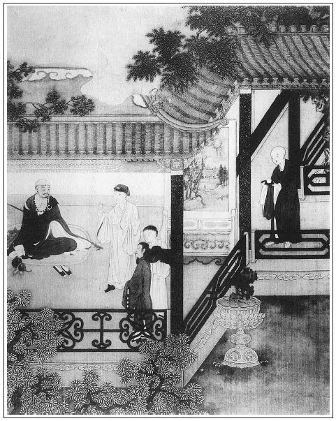

張回此回敘二巡按之榮，卻都是求榮者之地步也。總為西門生色。閒中點綴董嬌兒，又為桂兒、銀兒等一襯也。
玉皇廟，諸人出身也。故瓶兒以玉皇廟邀子虛上會時出，金蓮以玉皇廟玄壇座下之虎出，而春梅又以天福來送玉皇廟會分，月娘叫大丫頭時出。然而，三人俱發源於玉皇廟也。至於永福寺，金蓮埋於其中，春梅逢故主子其內，而月娘、孝哥俱於永福寺討結果。獨於瓶兒未有永福寺之瓜葛也。不知其於此回內，已為瓶兒結果於永福寺之因矣。何則？瓶兒病以梵僧藥，藥固用永福寺中求得，然而瓶兒獨早結於永福寺矣。故玉皇廟、永福寺是一部大起結。
後半梵僧一篇文字，能句句以現身二字讀之，方知其筆之妙也。
施藥必現身者，見西門之死，全以此物之妄施故也。
詩曰：
雅集無兼客，高情洽二難。
一尊傾智海，八斗擅吟壇。
話到如生旭，霜來恐不寒。
為行王捨乞，玄屑帶雲餐。

話說夏壽到家回復了話，夏提刑隨即就來拜謝西門慶，說道：「長官活命之恩，不是托賴長官餘光這等大力量，如何了得！」西門慶笑道：「長官放心。料著你我沒曾過為，隨他說去，老爺那裡自有個明見。」張夾小人自以為如此。一面在廳上放桌兒留飯，談笑至晚，方才作辭回家。到次日，依舊入衙門裡理事，不在話下。
卻表巡按曾公見本上去不行，就知道二官打點了，心中忿怒。因蔡太師所陳七事，內多舛訛，皆損下益上之事，即赴京見朝覆命，上了一道表章。極言：「天下之財貴於通流，取民膏以聚京師，恐非太平之治。民間結糶俵糴之法不可行，當十大錢不可用，鹽鈔法不可屢更。臣聞民力殫矣，誰與守邦？」張夾至言。蔡京大怒，奏上徽宗天子，說他大肆倡言，阻撓國事。將曾公付吏部考察，黜為陝西慶州知州。陝西巡按御史宋盤，就是學士蔡攸之婦兄也。太師陰令盤就劾其私事，逮其家人，鍛煉成獄，將孝序除名，竄於嶺表，以報其仇。此系後事，表過不題。
再說西門慶在家，一面使韓道國與喬大戶外甥崔本，拿倉鈔早往高陽關戶部韓爺那裡趕著掛號。留下來保家中定下果品，預備大桌面酒席，打聽蔡御史船到。一日，來保打聽得他與巡按宋御史船，一同京中起身，張夾曾公去而此輩來矣。都行至東昌府地方，使人來家通報。這裡西門慶就會夏提刑起身。來保從東昌府船上就先見了蔡御史，送了下程。
然後，西門慶與夏提刑出郊五十里迎接到新河口──地名百家村。先到蔡御史船上拜見了，備言邀請宋公之事。蔡御史道：「我知道，一定同他到府。」那時，東平胡知府，及合屬州縣方面有司軍衛官員、吏典生員、僧道陰陽，都具連名手本，伺候迎接。帥府周守備、荊都監、張團練，都領人馬披執跟隨，清蹕傳道，雞犬皆隱跡。鼓吹迎接宋巡按進東平府察院，各處官員都見畢，呈遞了文書，安歇一夜。
到次日，只見門吏來報：「巡鹽蔡爺來拜。」宋御史連忙出迎。敘畢禮數，分賓主坐下。獻茶已畢，宋御史便問：「年兄幾時方行？」蔡御史道：「學生還待一二日。」因告說：「清河縣有一相識西門千兵，乃本處巨族，為人清慎，富而好禮，亦是蔡老先生門下，與學生有一面之交。蒙他遠接，學生正要到他府上拜他拜。」宋御史問道：「是那個西門千兵？」蔡御史道：「他如今見是本處提刑千戶，昨日已參見過年兄了。」宋御史令左右取手本來看，見西門慶與夏提刑名字，說道：「此莫非與翟雲峰有親者？」蔡御史道：「就是他。如今見在外面伺候，要央學生奉陪年兄到他家一飯。未審年兄尊意若何？」宋御史道：「學生初到此處，只怕不好去得。」蔡御史道：「年兄怕怎的？既是雲峰分上，你我走走何害？」繡旁可笑。張夾一路問答，真不可使妻妾聽見。於是吩咐看轎，就一同起行，一面傳將出來。
西門慶知了此消息，與來保、賁四騎快馬先奔來家，預備酒席。門首搭照山綵棚，兩院樂人奏樂，叫海鹽戲並雜耍承應。原來宋御史將各項伺候人馬都令散了，只用幾個藍旗清道官吏跟隨，與蔡御史坐兩頂大轎，打著雙簷傘，同往西門慶家來。當時哄動了東平府，大鬧了清河縣，都說：「巡按老爺也認的西門大官人，來他家吃酒來了。」張夾閒中熱筆。慌的周守備、荊都監、張團練，各領本哨人馬把住左右街口伺候。
西門慶青衣冠帶，遠遠迎接。兩邊鼓樂吹打，到大門首下了轎進去。宋御史與蔡御史都穿著大紅獬豸繡服，烏紗皂履，鶴頂紅帶，從人執著兩把大扇。只見五間廳上湘簾高卷，錦屏羅列。正面擺兩張吃看桌席，高頂方糖，定勝簇盤，十分齊整。二官揖讓進廳，與西門慶敘禮。蔡御史令家人具贄見之禮：兩端湖綢、一部文集、四袋芽茶、一方端溪硯。宋御史只投了個宛紅單拜帖，上書「侍生宋喬年拜」。向西門慶道：「久聞芳譽。學生初臨此地，尚未盡情，不當取擾。若不是蔡年兄邀來進拜，何以幸接尊顏？」慌的西門慶倒身下拜，說道：「僕乃一介武官，屬於按臨之下。今日幸蒙清顧，蓬蓽生光。」於是鞠恭展拜，禮容甚謙。宋御史亦答禮相還，敘了禮數。當下蔡御史讓宋御史居左，他自在右，張夾有東道焉。西門慶垂首相陪。茶湯獻罷，階下簫韶盈耳，鼓樂喧闐，動起樂來。西門慶遞酒安席已畢，下邊呈獻割道。說不盡餚列珍羞，湯陳桃浪，端的歌舞聲容，食前方丈。兩位轎上跟從人，每位五十瓶酒、五百點心、一百斤熟肉，都領下去。家人、吏書、門子人等，另在廂房中管待，不必細說。當日西門慶這席酒，也費夠千兩金銀。
那宋御史又系江西南昌人，為人浮躁，只坐了沒多大回，聽了一折戲文就起來。慌的西門慶再三固留。蔡御史在旁便說：「年兄無事，再消坐一時，何遽回之太速耶！」宋御史道：「年兄還坐坐，學生還欲到察院中處分些公事。」張夾拿身份。西門慶早令手下，把兩張桌席連金銀器，已都裝在食盒內，共有二十抬，叫下人夫伺候。宋御史的一張大桌席、兩罈酒、兩牽羊、兩封金絲花、兩疋段紅、一副金台盤、兩把銀執壺、十個銀酒杯、兩個銀折盂、一雙牙箸。蔡御史的也是一般的。都遞上揭帖。宋御史再三辭道：「這個，我學生怎麼敢領？」因看著蔡御史。蔡御史道：「年兄貴治所臨，自然之道，我學生豈敢當之！」西門慶道：「些須微儀，不過侑觴而已，何為見外？」比及二官推讓之次，而桌席已抬送出門矣。宋御史不得已，方令左右收了揭帖，向西門慶致謝說道：「今日初來識荊，既擾盛席，又承厚貺，何以克當？余容圖報不忘也。」張夾比曾公何如。因向蔡御史道：「年兄還坐坐，學生告別。」於是作辭起身。西門慶還要遠送，宋御史不肯，急令請回，舉手上轎而去。
西門慶回來，陪侍蔡御史，解去冠帶，請去捲棚內後坐。因吩咐把樂人都打發散去，只留下戲子。西門慶令左右重新安放桌席，擺設珍羞果品上來，二人飲酒。蔡御史道：「今日陪我這宋年兄坐便僭了，又叨盛筵並許多酒器，何以克當？」西門慶笑道：「微物惶恐，表意而已！」因問道：「宋公祖尊號？」蔡御史道：「號松原。松樹之松，原泉之原。」又說起：「頭裡他再三不來，被學生因稱道四泉盛德，與老先生那邊相熟，他才來了。他也知府上與雲峰有親。」西門慶道：「想必翟親家有一言於彼。我觀宋公為人有些蹊蹺。」張夾如畫，是趨奉人，摹頭不著心事。蔡御史道：「他雖故是江西人，倒也沒甚蹊蹺處。只是今日初會，怎不做些模樣！」說畢笑了。西門慶便道：「今日晚了，老先生不回船上去罷了。」蔡御史道：「我明早就要開船長行。」西門慶道：「請不棄在捨留宿一宵，明日學生長亭送餞。」蔡御史道：「過蒙愛厚。」因吩咐手下人：「都回門外去罷，明早來接。」眾人都應諾去了，只留下兩個家人伺候。
西門慶見手下人都去了，走下席來，叫玳安兒附耳低言，如此這般：「即去院裡坐名叫了董嬌兒、韓金釧兒兩個，打後門裡用轎子抬了來，休交一人知道。」那玳安一面應諾去了。西門慶復上席，陪蔡御史吃酒。海鹽子弟在旁歌唱。西門慶因問：「老先生到家多少時就來了？令堂老夫人起居康健麼？」蔡御史道：「老母到也安。學生在家，不覺荏苒半載，回來見朝，不想被曹禾論劾，將學生敝同年一十四人之在史館者，一時皆黜授外職。繡眉做官的此等處要自反。學生便選在西台，新點兩淮巡鹽。宋年兄便在貴處巡按，也是蔡老先生門下。」西門慶問道：「如今安老先生在那裡？」蔡御史道：「安鳳山他已升了工部主事，往荊州催攢皇木去了。也待好來也。」說畢，西門慶教海鹽子弟上來遞酒。蔡御史吩咐：「你唱個《漁家傲》我聽。」子弟排手在旁正唱著，只見玳安走來請西門慶下邊說話。玳安道：「叫了董嬌兒、韓金釧打後門來了，張夾必叫二人是不相知者。在娘房裡坐著哩。」西門慶道：「你吩咐把轎子抬過一邊才好。」玳安道：「抬過一邊了。」
這西門慶走至上房，兩個唱的向前磕頭。西門慶道：「今日請你兩個來，晚夕在山子下扶侍你蔡老爹。他如今見做巡按御史，你不可怠慢，用心扶侍他，我另酬答你。」韓金釧兒笑道：「爹不消吩咐，俺每知道。」西門慶因戲道：「他南人的營生，好的是南風，你每休要扭手扭腳的。」董嬌兒道：「娘在這裡聽著，爹你老人家『羊角蔥靠南牆──越發老辣』了。王府門首磕了頭，俺們不吃這井裡水了？」西門慶笑的往前邊來。走到儀門首，只見來保和陳敬濟拿著揭帖走來，與西門慶看，說道：「剛才喬親家爹說，趁著蔡老爹這回閒，爹倒把這件事對蔡老爹說了罷，只怕明日起身忙了。張夾大是能事。教姐夫寫了俺兩個名字在此。」西門慶道：「你跟了來。」來保跟到卷棚隔子外邊站著。西門慶飲酒中間因題起：「有一事在此，不敢干瀆。」蔡御史道：「四泉，有甚事只顧吩咐，學生無不領命。」西門慶道：「去歲因捨親在邊上納過些糧草，坐派了些鹽引，正派在貴治揚州支鹽。望乞到那裡青目青目，早些支放就是愛厚。」因把揭帖遞上去，蔡御史看了。上面寫著：「商人來保、崔本，舊派淮鹽三萬引，乞到日早掣。」蔡御史看了笑道：「這個甚麼打緊。」一面把來保叫至跟前跪下，吩咐：「與你蔡爺磕頭。」蔡御史道：「我到揚州，你等徑來察院見我。我比別的商人早掣一個月。」張夾人情如此。西門慶道：「老先生下顧，早放十日就夠了。」蔡御史把原帖就袖在袖內。一面書僮旁邊斟上酒，子弟又唱。
唱畢，已有掌燈時分，蔡御史便說：「深擾一日，酒告止了罷。」因起身出席，左右便欲掌燈，西門慶道：「且休掌燭，請老先生後邊更衣。」於是從花園裡遊玩了一回，讓至翡翠軒，那裡又早湘簾低簇，銀燭熒煌，設下酒席。海鹽戲子，西門慶已命打發去了。書僮把卷棚內家活收了，關上角門，只見兩個唱的盛妝打扮，立於階下，向前插燭也似磕了四個頭。但見：
綽約容顏金縷衣，香塵不動下階墀。
時來水濺羅裙濕，好似巫山行雨歸。
蔡御史看見，欲進不能，欲退不捨。便說道：「四泉，你如何這等愛厚？恐使不得。」張夾喜極矣。西門慶笑道：「與昔日東山之遊，又何異乎？」蔡御史道：「恐我不如安石之才，而君有王右軍之高致矣。」於是月下與二妓攜手，恍若劉阮之入天台。因進入軒內，見文物依然，因索紙筆就欲留題相贈。西門慶即令書僮連忙將端溪硯研的墨濃濃的，拂下錦箋。這蔡御史終是狀元之才，拈筆在手，文不加點，字走龍蛇，燈下一揮而就，作詩一首。詩曰：
不到君家半載餘，軒中文物尚依稀。
雨過書僮開藥圃，風回仙子步花台。文旁狀元公，失粘了。不寫出，亦藏拙之道也。
飲將醉處鍾何急，詩到成時漏更催。
此去又添新悵望，不知何日是重來。
寫畢，教書僮粘於壁上，以為後日之遺焉。因問二妓：「你們叫甚名字？」一個道：「小的姓董，名喚嬌兒。他叫韓金釧兒。」蔡御史又道：「你二人有號沒有？」董嬌兒道：「小的無名娼妓，那討號來？」蔡御史道：「你等休要太謙。」問至再三，韓金釧方說：「小的號玉卿。」董嬌兒道：「小的賤號薇仙。」繡眉此字原佳。張旁所為開到荼䕷花事了也。蔡御史一聞「薇仙」二字，心中甚喜，遂留意在懷。令書僮取棋桌來，擺下棋子，蔡御史與董嬌兒兩個著棋。西門慶陪侍，韓金釧兒把金樽在旁邊遞酒，書僮歌唱。蔡御史贏了一盤棋，董嬌兒吃過，又回奉蔡御史一杯。韓金釧這裡也遞與西門慶一杯陪飲。飲了酒，兩人又下。董嬌兒贏了，連忙遞酒一杯與蔡御史，西門慶在旁又陪飲一杯。飲畢，蔡御史道：「四泉，夜深了，不勝酒力，」於是走出外邊來，站立在花下。
那時正是四月半頭，月色才上。西門慶道：「老先生，天色還早哩。還有韓金釧，不曾賞他一杯酒。」蔡御史道：「正是。你喚他來，我就此花下立飲一杯。」於是韓金釧拿大金桃杯，滿斟一杯，用纖手捧遞上去。董嬌兒在旁捧果，蔡御史吃過，又斟了一杯，賞與韓金釧兒。因告辭道：「四泉，今日酒大多了，令盛價收過去罷。」於是與西門慶握手相語，說道：「賢公盛情盛德，此心懸懸。非斯文骨肉，張夾讀書者專會以二字許人，守錢虜偏有福分消受二字。何以至此？向日所貸，學生耿耿在心，在京已與雲峰表過。倘我後日有一步寸進，斷不敢有辜盛德。」西門慶道：「老先生何出此言？到不消介意。」
韓金釧見他一手拉著董嬌兒，知局，就往後邊去了。到了上房裡，月娘問道：「你怎的不陪他睡，來了？」韓金釧笑道：「他留下董嬌兒了，我不來，只管在那裡做甚麼？」良久，西門慶亦告了安置進來，叫了來興兒吩咐：「明日早五更，打發食盒酒米點心下飯，叫了廚役，跟了往門外永福寺去，與你蔡老爹送行。叫兩個小優兒答應。休要誤了。」來興兒道：「家裡二娘上壽，沒有人看。」西門慶道：「留下棋童兒買東西，叫廚子後邊大灶上做罷。」
不一時，書僮、玳安收下家活來，又討了一壺好茶，往花園裡去與蔡老爹漱口。翡翠軒書房床上，鋪陳衾枕俱各完備。蔡御史見董嬌兒手中拿著一把湘妃竹泥金面扇兒，上面水墨畫著一種湘蘭平溪流水。董嬌兒道：「敢煩老爹賞我一首詩在上面。」蔡御史道：「無可為題，就指著你這薇仙號。」於是燈下拈起筆來，寫了四句在上：
小院閒庭寂不嘩，一池月上浸窗紗。
邂逅相逢天未晚，紫薇郎對紫薇花。文旁又失粘了，丟人。不知作者有意為之，抑實不自知也。
寫畢，那董嬌兒連忙拜謝了。兩個收拾上床就寢。書僮、玳安與他家人在明間裡睡。一宿晚景不題。
次日早晨，蔡御史與了董嬌兒一兩銀子，用紅紙大包封著，到於後邊，拿與西門慶瞧。西門慶笑說道：「文職的營生，他那裡有大錢與你！這個就是上上籤了。」因交月娘每人又與了他五錢銀子，從後門打發去了。書僮舀洗面水，打發他梳洗穿衣。西門慶出來，在廳上陪他吃了粥。手下又早伺候轎馬來接，與西門慶作辭，謝了又謝。西門慶又道：「學生日昨所言之事，老先生到彼處，學生這裡書去，千萬留神一二，足仞不淺。」蔡御史道：「休說賢公華札下臨，只盛價有片紙到，學生無不奉行。」張夾可憐。說畢，二人同上馬，左右跟隨。出城外，到於永福寺，借長老方丈擺酒餞行。來興兒與廚役早已安排桌席停當。李銘、吳惠兩個小優彈唱。數杯之後，坐不移時，蔡御史起身，夫馬、坐轎在於三門外伺候。臨行，西門慶說起苗青之事：「乃學生相知，因詿誤在舊大巡曾公案下，行牌往揚州案候捉他。此事情已問結了。倘見宋公，望乞借重一言，彼此感激。」蔡御史道：「這個不妨，我見宋年兄說，設使就提來，放了他去就是了。」西門慶又作揖謝了。看官聽說：後來宋御史往濟南去，河道中又與蔡御史會在那船上。公人揚州提了苗青來，蔡御史說道：「此系曾公手裡案外的，你管他怎的？」遂放回去了。倒下詳去東平府，還只把兩個船家，決不待時，安童便放了。張夾冷案已結。正是：
公道人情兩是非，人情公道最難為。
若依公道人情失，順了人情公道虧。
當日西門慶要送至船上，蔡御史不肯，說道：「賢公不消遠送，只此告別。」西門慶道：「萬惟保重，容差小價問安。」說畢，張夾鹽引在心。蔡御史上轎而去。
西門慶回到方丈坐下，長老走來合掌問訊，遞茶，西門慶答禮相還。見他雪眉交白，便問：「長老多大年紀？」長老道：「小僧七十有四。」西門慶道：「到還這等康健。」因問法號，長老道：「小僧法名道堅。」張夾便妙。又問：「有幾位徒弟？」長老道：「止有兩個小徒。張旁又妙。本寺也有三十餘僧行。」西門慶道：「這寺院也寬大，只是欠修整。」長老道：「不滿老爹說，這座寺原是周秀老爹蓋造，張夾伏脈。長住裡沒錢糧修理，丟得壞了。」張夾永福寺葬金蓮，卻先死西門與瓶兒，是玉皇廟熱之源，永福寺冷之穴也。西門慶道：「原來就是你守備府周爺的香火院。我見他家莊子不遠。不打緊處，你稟了你周爺，寫個緣簿，別處也再化些，我也資助你些佈施。」道堅連忙又合掌問訊謝了。西門慶吩咐玳安兒：「取一兩銀子謝長老。今日打攪。」道堅道：「小僧不知老爹來，不曾預備齋供。」西門慶道：「我要往後邊更更衣去。」道堅連忙叫小沙彌開門。西門慶更了衣，因見方丈後面五間大禪堂，有許多雲遊和尚在那裡敲著木魚看經。西門慶不因不由，信步走入裡面觀看。見一個和尚形骨古怪，相貌搊搜，張夾著。生的豹頭凹眼，張夾著。色若紫肝，張夾著。戴了雞蠟箍兒，張夾著。穿一領肉紅直裰。張夾著。頦下髭鬚亂拃，張夾著。頭上有一溜光簷，張夾著。就是個形容古怪真羅漢，未除火性獨眼龍。繡眉細看此僧，卻像何物。張夾著。在禪床上旋定過去了，垂著頭，張夾著。把脖子縮到腔子裡，張夾著。鼻孔中流下玉箸來。張夾著。西門慶口中不言，心中暗道：「此僧必然是個有手段的高僧。不然，如何因此異相？等我叫醒他，問他個端的。」於是高聲叫：「那位僧人，你是那裡人氏，何處高僧？」叫了頭一聲不答應；第二聲也不言語；第三聲，只見這個僧人在禪床上把身子打了個挺，張夾可像。伸了伸腰，張夾可像。睜開一隻眼，張夾可像。跳將起來，張夾可像。向西門慶點了點頭兒，繡眉和尚舉止，與陽物原差不遠。張夾可狠象。麄聲應道：張夾一部萬言人物，此僧獨顯然寫出。「你問我怎的？貧僧行不更名，坐不改姓，乃西域天竺國密松林張夾著。齊腰峰張夾著。寒庭寺下來的胡僧，張夾著。雲遊至此，施藥濟人。官人，你叫我有甚話說？」西門慶道：「你既是施藥濟人，我問你求些滋補的藥兒，你有也沒有？」胡僧道：「我有，我有。」又道：「我如今請你到家，你去不去？」胡僧道：「我去，我去。」西門慶道：「你說去，即此就行。」那胡僧直豎起身來，向床頭取過他的鐵柱杖來拄著，背上他的皮褡褳──褡褳內盛了兩個藥葫蘆兒。下的禪堂，就往外走。西門慶吩咐玳安：「叫了兩個驢子，同師父先往家去等著，我就來。」胡僧道：「官人不消如此，你騎馬只顧先行。貧僧也不騎頭口，管情比你先到。」西門慶道：「一定是個有手段的高僧。不然如何開這等朗言。」恐怕他走了，吩咐玳安：「好歹跟著他同行。」於是作辭長老上馬，僕從跟隨，逕直進城來家。
那日四月十七日，不想是王六兒生日，張夾起手試藥之人，故著他生日也。王六兒生日，西門、瓶兒死日矣。家中又是李嬌兒上壽，有堂客吃酒。後晌時分，只見王六兒家沒人使，使了他兄弟王經來請西門慶。吩咐他宅門首只尋玳安兒說話，不見玳安在門首，只顧立。立了約一個時辰，正值月娘與李嬌兒送院裡李媽媽出來上轎，看見一個十五六歲扎包髻兒小廝，問是那裡的。那小廝三不知走到跟前，與月娘磕了個頭，說道：「我是韓家，尋安哥說話。」月娘問：「那安哥？」平安在旁邊，恐怕他知道是王六兒那裡來的，恐怕他說岔了話，向前把他拉過一邊，對月娘說：「他是韓夥計家使了來尋玳安兒，問韓夥計幾時來。」以此哄過。月娘不言語，回後邊去了。
不一時玳安與胡僧先到門首，走的兩腿皆酸，渾身是汗，抱怨的要不的。那胡僧體貌從容，氣也不喘。平安把王六兒那邊使了王經來請爹，尋他說話一節，對玳安兒說了一遍，道：「不想大娘看見，早是我在旁邊替他摭拾過了。不然就要露出馬腳來了。等住回娘若問，你也是這般說。」那玳安走的睜睜的，只顧搧扇子：張夾妙景，妙情。「今日造化低也怎的？平白爹交我領了這賊禿囚來。好近路兒！從門外寺裡直走到家，路上通沒歇腳兒，走的我上氣兒接不著下氣兒。張夾梵僧真有此技倆，然又為浪蝶一描，為下蝴蝶巷作引也。爹交雇驢子與他騎，他又不騎。他便走著沒事，難為我這兩條腿了！張夾妙語雙關。把鞋底子也磨透了，腳也踏破了。攘氣的營生！」平安道：「爹請他來家做甚麼？」玳安道：「誰知道！他說問他討甚麼藥哩。」正說著，只聞喝道之聲。西門慶到家，看見胡僧在門首，說道：「吾師真乃人中神也。果然先到。」一面讓至裡面大廳上坐。西門慶叫書僮接了衣裳，換了小帽，陪他坐的。吃了茶，那胡僧睜眼觀見廳堂高遠，院宇深沉，門上掛的是龜背紋蝦須織抹綠珠簾，張夾像甚麼？地下鋪獅子滾繡球絨毛線毯。張夾像甚麼？正當中放一張蜻蜓腿、螳螂肚、肥皂色起楞的桌子，張夾很像甚麼？桌子上安著絛環樣須彌座大理石屏風。張夾又像甚麼？周圍擺的都是泥鰍頭、楠木靶腫筋的交倚，張夾更像甚麼？兩壁掛的畫都是紫竹竿兒綾邊、瑪瑙軸頭。繡眉讀此書者於器用食物，皆病其贅，誠潛心細讀數遍，方知其非贅也。張夾還像甚麼：《水滸》中人所云一片鳥東西也。正是：
鼉皮畫鼓振庭堂，烏木春台盛酒器。
胡僧看畢，西門慶問道：「吾師用酒不用？」胡僧道：「貧僧酒肉齊行。」西門慶一面吩咐小廝：「後邊不消看素饌，拿酒飯來。」那時正是李嬌兒生日，廚下餚饌下飯都有。安放桌兒，只顧拿上來。先綽邊兒放了四碟果子、四碟小菜，又是四碟案酒：一碟頭魚、張夾趣。一碟糟鴨、張夾趣。一碟烏皮雞、張夾趣。一碟舞鱸公。張夾趣。又拿上四樣下飯來：一碟羊角蔥𤆑炒的核桃肉、張夾象。一碟細切的げこ樣子肉、張夾象。一碟肥肥的羊貫腸、張夾象。一碟光溜溜的滑鰍。張夾象。次又拿了一道湯飯出來：一個碗內兩個肉圓子，夾著一條花腸滾子肉，名喚一龍戲二珠湯；張夾象，像。一大盤裂破頭高裝肉包子。張夾象。西門慶讓胡僧吃了，教琴童拿過團靶鉤頭雞脖壺來，張夾象。打開腰州精製的紅泥頭，一股一股邈出滋陰摔白酒來，張夾象，像。傾在那倒垂蓮蓬高腳鍾內，遞與胡僧。那胡僧接放口內，一吸而飲之。張夾金丹大道。隨即又是兩樣添換上來：一碟寸扎的騎馬腸兒、張夾象。一碟子醃臘鵝脖子。張夾象。又是兩樣艷物與胡僧下酒：一碟子癩葡萄、張夾象。一碟子流心紅李子。張夾象，像。落後又是一大碗鱔魚面與菜卷兒，張夾象。一齊拿上來與胡僧打散。登時把胡僧吃的楞子眼兒，張夾象，像。便道：「貧僧酒醉飯飽，足以夠了。」
西門慶叫左右拿過酒桌去，因問他求房術的藥兒。胡僧道：「我有一枝藥，乃老君煉就，王母傳方。非人不度，非人不傳，專度有緣。既是官人厚待於我，我與你幾丸罷。」於是向褡褳內取出葫蘆來，傾出百十丸，吩咐：「每次只一粒，不可多了，用燒酒送下。」又將那一個葫兒捏了，取二錢一塊粉紅膏兒，吩咐：「每次只許用二厘，不可多用。若是脹的慌，用手捏著，兩邊腿上只顧摔打，百十下方得通。你可樽節用之，不可輕洩於人。」西門慶雙手接了，說道：「我且問你，這藥有何功效？」胡僧說：
形如雞卵，色似鵝黃。三次老君炮煉，王母親手傳方。外視輕如糞土，內覷貴乎玕琅。比金金豈換，比玉玉何償！任你腰金衣紫，任你大廈高堂，任你輕裘肥馬，任你才俊棟樑，此藥用托掌內，飄然身入洞房。洞中春不老，物外景長芳；玉山無頹敗，丹田夜有光。一戰精神爽，再戰氣血剛。不拘嬌艷寵，十二美紅妝，交接從吾好，徹夜硬如槍。服久寬脾胃，滋腎又扶陽。百日鬚髮黑，千朝體自強。固齒能明目，陽生姤始藏。恐君如不信，拌飯與貓嘗：三日淫無度，四日熱難當；白貓變為黑，尿糞俱停亡；夏月當風臥，冬天水裡藏。若還不解洩，毛脫盡精光。每服一厘半，陽興愈健強。一夜歇十女，其精永不傷。老婦顰眉蹙，淫娼不可當。有時心倦怠，收兵罷戰場。冷水吞一口，陽回精不傷。快美終宵樂，春色滿蘭房。贈與知音客，永作保身方。
西門慶聽了，要問他求方兒，說道：「請醫須請良，傳藥須傳方。吾師不傳於我方兒，倘或我久後用沒了，那裡尋師父去？隨師父要多少東西，我與師父。」因令玳安：「後邊快取二十兩白金來。」遞與胡僧，要問他求這一枝藥方。那胡僧笑道：「貧僧乃出家之人，雲遊四方，要這資財何用？繡眉果然用不著。高僧，高僧。官人趁早收拾回去。」一面就要起身。西門慶見他不肯傳方，便道：「師父，你不受資財，我有一疋五丈長大布，與師父做件衣服罷。」即令左右取來，雙手遞與胡僧。胡僧方才打問訊謝了。臨出門又吩咐：「不可多用，戒之！戒之！」言畢，背上褡褳，拴定枴杖，出門揚長而去。正是：
柱杖挑擎雙日月，芒鞋踏遍九軍州。
文回文禹門云：請巡撫，遇胡僧，皆西門慶平生極得意之事。雖告之曰：請須破財，遇則喪命，不顧也。亦匪獨西門慶為然，遍天下皆是也。官場之中，得大憲多與一言，多看一眼，便欣欣然有喜色，向人樂道之。而況入其門，登其堂，分庭抗禮，共席同杯，其榮幸何如？千金又何足惜哉！流俗之輩，買春藥以媚內，服補藥以宿娼，正自有人，姑且勿論。即現在鴉片煙一物，食之者多，大半皆以其壯陽助氣，可以久戰而食之。於是花街柳巷，無一不預備此物。而況一厘可御十女，一粒可盡五更，有不以為異寶奇珍者哉！
此一回斥西門慶屈體求榮，竊不謂然。此宋喬年之大恥，非西門慶之恥也。一個御史之尊，一省巡撫之貴，輕騎減從，枉顧千（兵）〔戶〕之家，既赴其酒筵，復收其禮物。心心唸唸，有一翟雲峰在胸中。斯真下流不堪，並應伯爵之不若，堂堂大臣，恥莫大焉。西門慶一破落戶而忝列提刑，其勢位懸絕，縱跪拜過禮，亦其分也。周守備等尚在街前伺候，謂之曰榮可也，亦何為屈體乎？至若獻妓於小蔡，究與獻姬妾不同，而又非其所交之銀、桂也。其視狀元為何等人物乎？乃御史公果感情不盡也，斯文掃地矣。宋、蔡二御史，屈體丟人，西門慶沾光不少矣。
小蔡去而和尚來，可謂以龜引龜，而西門之龜頭為之生色，此又王六兒，潘六兒之大幸，而李六兒之大不幸也。瓶兒之死，伏根於此，西門慶之死亦由於此。作者令其死於此，閱者始知西門慶之死，實因於此。而當時之西門慶，固不知此藥之可以死人，而寶之貴之，與今日之吸食鴉片煙貪不知止者，果有異乎否耶？
然而西門慶究竟大得便宜，苗青開釋，官亦免參，清河傳名，鹽引到手，非名利兼收乎？加以眾婦投戈，諸雌薦枕，俗語有云：能在花下死，作鬼亦風流。世人有求死而不可得者，西門慶何修而得此？吾故曰：此一回皆其生平極得意之事也。